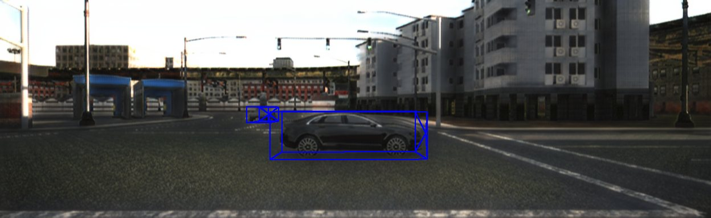
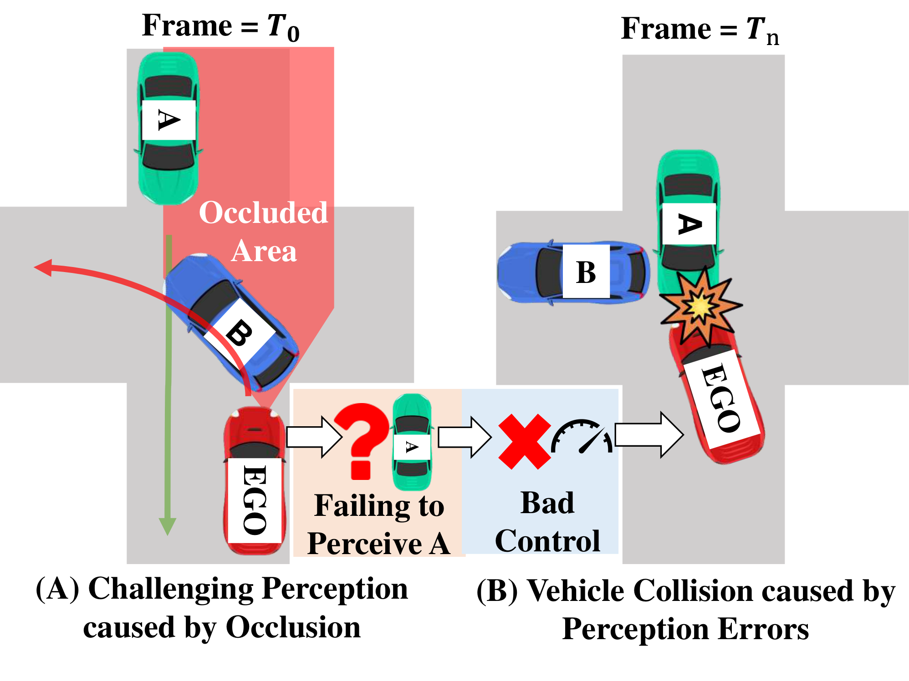
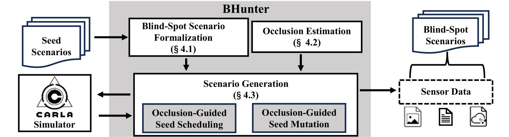
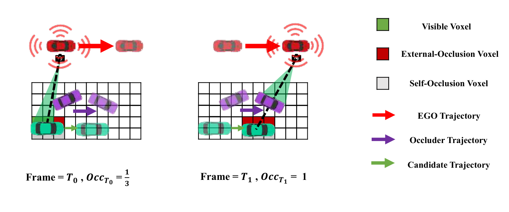
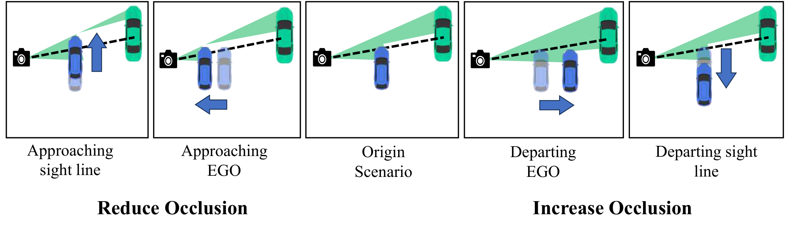
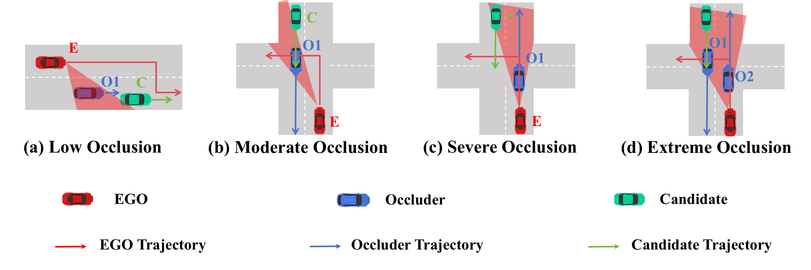
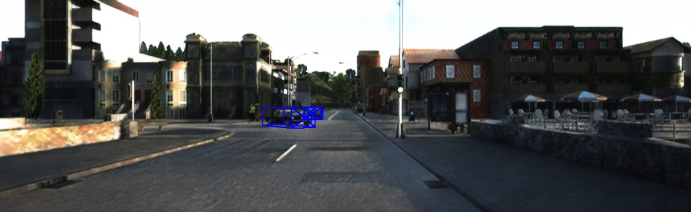
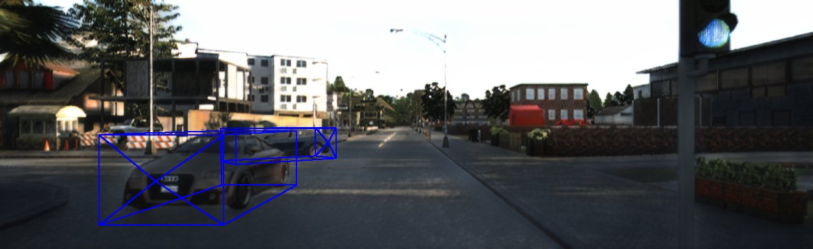
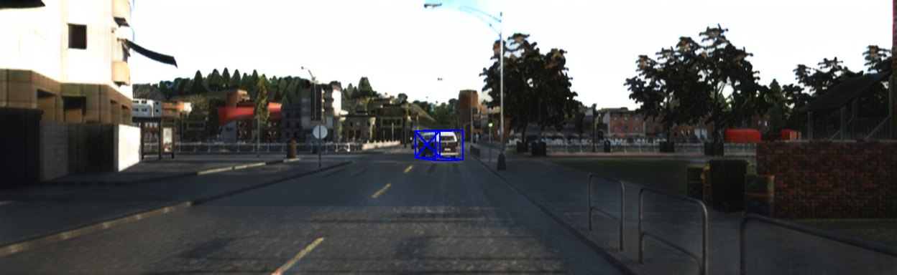
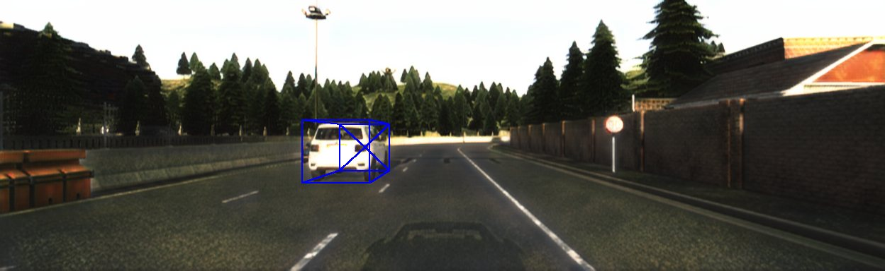

ACM TOSEM 2026
BHUNTER
Generating Blind-Spot Driving Scenarios for Robustness Testing of Autonomous Driving Perception
1Fudan University, Shanghai, China
† Corresponding authors
sypeng23@m.fudan.edu.cn jrdai14@fudan.edu.cn yhlv22@m.fudan.edu.cn 24110240138@m.fudan.edu.cn 23110240081@m.fudan.edu.cn yuanxzhang@fudan.edu.cn m_yang@fudan.edu.cn
BHUNTER searches simulated traffic until a road user falls into a chosen blind spot, then exports those scenes for detection and tracking.
Gallery
Drag the divider. The left side is before retraining, and the right side is after. These are predicted detections on scenes released with the paper.

No occlusion. Frame 000000. Drag to compare before and after retraining.
Motivation
A blind spot is a short stretch of driving in which another road user slips behind an occluder and then reappears. While the target is hidden, a detector or tracker can drop it. The ego vehicle then meets the same road user with too little time to brake. Prior collision studies attribute about 11.6% of vehicle crashes to this kind of occlusion.
Public logs such as KITTI and nuScenes contain few of these moments, and the high-occlusion cases they do contain are unevenly distributed. Editing a single frame, or prompting an image model, does not set occlusion across time. A simulator can move traffic continuously, but it does not by itself decide when a blind spot has reached a chosen level.
- Perception is scored mostly on open views, so a miss that lasts only a few frames is easy to overlook.
- Existing data and generation tools do not offer a controllable, temporally consistent occlusion level.
- BHUNTER models the blind spot, searches for it in CARLA, and releases the scenes that match the requested level.

Method
BHUNTER turns a blind spot into three roles, scores how hidden the candidate is, and then searches traffic until that score matches a target.
-
01
Formalize
Each scene has an ego vehicle, a candidate that should be perceived, and one or more occluders. An occlusion window is the contiguous run of frames in which the candidate is blocked by something else.
-
02
Estimate
The candidate box is split into voxels. A ray from the ego sensor marks each voxel as visible, blocked by an occluder, or hidden by the candidate itself. Self-occlusion does not count as a blind spot.
-
03
Generate
Occlusion-guided fuzzing schedules seeds that already lie closer to the target, then moves an occluder toward or away from the line of sight. Edited trajectories stay continuous.



A scenario is saved when its scenario-level temporal occlusion rate falls inside the requested interval. The export is KITTI-style: camera images, LiDAR, calibration, 3D labels, and, for tracking, poses. An appearance-transfer model adapted from Unsup Recycle-GAN can shift simulated frames toward real imagery. The released checkpoint is epoch 50.
Case Study
The same three roles recur as occlusion grows: the ego vehicle, a candidate that should be perceived, and an occluder that blocks it. Low occlusion leaves the candidate partly visible. Extreme occlusion places the occluder on the line of sight.

Benchmark
The first dedicated blind-spot perception benchmark: 2,000 scenarios, 400 at each of five occlusion levels, with synchronized camera and LiDAR, 3D labels, and temporally consistent frames. Retraining widely used detectors and trackers on these scenes improves high-occlusion performance by up to 30.2 and 28.98 percentage points. Generation of a scenario finishes within six minutes, up to 9× faster than the baselines in the paper.
No occlusion
The candidate stays in open view.

Low
A small part of the candidate is blocked.

Moderate
Occlusion covers a substantial share of the target.

Severe
Most of the candidate is hidden from the ego vehicle.

Extreme
The candidate is nearly out of sight.
Released under evaluation/benchmark in a KITTI-style layout. Each level includes calibration, RGB images, labels, ground planes, and LiDAR. Tracking also includes poses and an occlusion window.
Detection
Drag the divider on the same frame. Before retraining is on the left. Severe uses frame 000002: on LiDAR the original model marks one car, and the retrained model also marks a second car that was missed. Moderate uses frame 000004, a close vehicle at the edge of the view.
No occlusion. Blue boxes are model predictions on frame 000000.
Tracking
Sequences from the same five occlusion levels. Choose a level, then play the camera or LiDAR result before or after retraining.
No occlusion, after retraining, camera view.
BibTeX
@article{bhunter2026tosem,
author = {Peng, Songyang and Dai, Jiarun and Lv, Yanghao and Luo, Jiaqi and Huang, Zongan and Zhang, Yuan and Yang, Min},
title = {BHUNTER: Generating Blind-Spot Driving Scenarios for Robustness Testing of Autonomous Driving Perception},
journal = {ACM Transactions on Software Engineering and Methodology},
year = {2026}
}
Software archive: 10.5281/zenodo.23072481